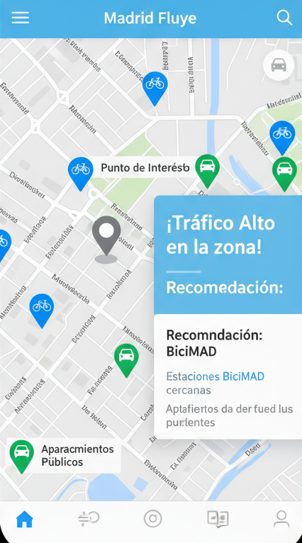

Concept: Madrid Fluye: Your Smart Mobility Guide
It is a tool that helps citizens decide the best mode of transport to reach a destination within Madrid, based on historical traffic congestion levels in that area.

Key Features:
Destination Selector:
The user enters an address or a point of interest in Madrid.
Congestion Analysis:
The application consults the traffic intensity dataset to determine if the destination area is characterized by HIGH, MEDIUM, or LOW congestion on working days.
Smart Recommendation:
-
If traffic is HIGH: The application will recommend using BiciMAD as the most efficient option. It will display a map centered on the destination, highlighting the nearest BiciMAD stations and hiding or dimming car parks.
-
If traffic is LOW: The application will recommend using a private vehicle. It will display the same map, but this time highlighting the nearby public car parks.
Information Card:
Clicking on a BiciMAD station or a car park will display its relevant details (address, spaces, etc.).